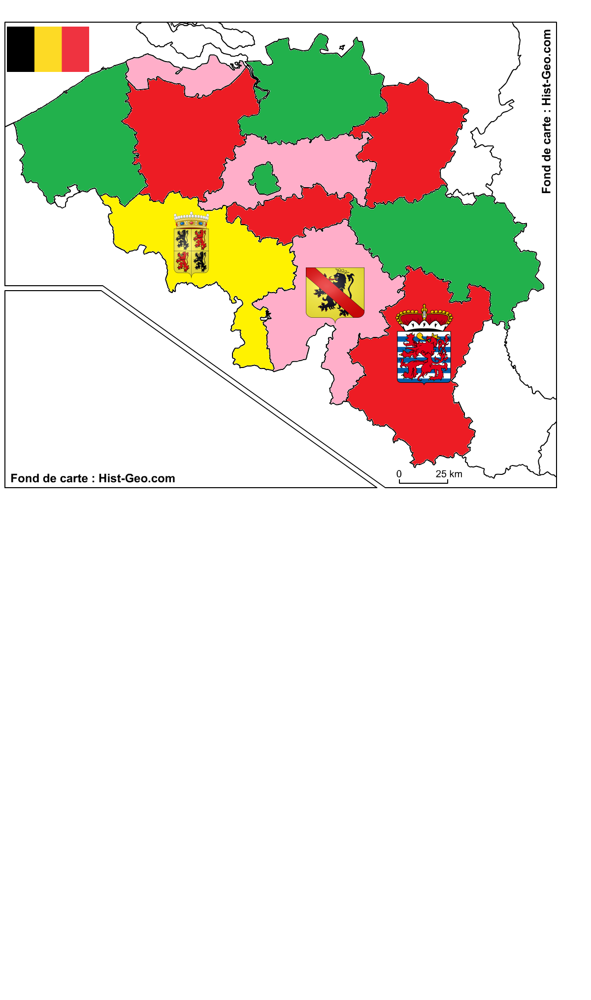

Géopolitique
Capitale: Bruxelles
Population:10,2 millions
Langue officielle: néerlandais, français et allemand
Groupe majoritaire: français (34,1 %), allemand (1 %), luxembourgeois, italien, arabe, turc, etc.
Groupes minoritaires: français (34,1 %), allemand (1 %), luxembourgeois, italien, arabe, turc, etc.
Système politique: monarchie constitutionnelle fédéralisée en trois communautés et trois régions
Articles constitutionnels (langue): art. 2, 4, 30, 43, 54, 67, 68, 99, 115, 118, 121, 123, 127, 128, 129, 130, 135, 136, 137, 138, 139, 175, 176, 178, 189 de la Constitution coordonnée du 17 février 1994
Lois linguistiques: Loi du 31 juillet 1921 sur l'emploi des langues en matière administrative (abrogÉE); Loi du 28 juin 1932 sur l'emploi des langues en matière administrative (1932, modifiée); Loi du 15 juin1935
sur l'emploi des langues en matière judiciaire; Loi du 2 juillet 1954 sur l'emploi des langues en matière administrative (abrogée); Loi sur 8 novembre 1962 fixant la frontière linguistique (1962); Arrêté royal du 18 juillet 1966 portant coordination des lois sur l'emploi des langues en matière administrative; Loi du 18 juillet 1966 sur l'emploi des langues en matière administrative coordonnée (1966); Loi du 30 novembre 1966 (Arrêté royal fixant les conditions de délivrance des certificats de connaissances linguistiques); Loi du 2 juillet 1969 sur l'emploi des langues en matière judiciaire (1969); Convention entre le royaume de Belgique et le royaume des Pays-Bas instituant une Union de la langue néerlandaise (1980); Loi spéciale du 8 août 1980 de réformes constitutionnelles (1980); Loi du 12/10/2002 modifiant les lois sur l’emploi des langues en matière administrative (2002; Arrêté royal du 16 mai 2003 accordant des primes linguistiques aux membres du personnel de la Fonction publique administrative fédérale (2003); Arrêté royal du 16 mai 2003 portant la désignation d'adjoints bilingues à titre de mesure transitoire dans les services centraux des services publics fédéraux (2003);
Lois scolaires: Loi concernant le régime linguistique dans l'enseignement du 30 juillet 1963 (avec modifications de 1982); Arrêté royal de 1966 réglant l'enseignement en français dans les écoles de langue allemande,
et l'enseignement en allemand dans les écoles de langue française des communes de la région de langue allemande (1966); Décret portant modification de l'article 9 de la loi du 30 juillet 1963 concernant le régime linguistique dans l'enseignement (1975).
Lois à portée linguistique: Arrêté du gouvernement provisoire du 16 novembre 1830 (abrogé); Loi du 22 mai 1878 (abrogée); Loi sur l'organisation des agglomérations et fédérations communales (1971); Loi portant l'organisation,
la compétence et le fonctionnement de la Cour d'arbitrage (1983); Loi spéciale relative aux institutions bruxelloises du 12 janvier 1989; Loi spéciale sur la Cour constitutionnelle (1989) ; Loi spéciale portant transfert de diverses compétences aux régions et communautés (2001); Loi du 19 juillet portant réforme de l'arrondissement judiciaire de Bruxelles (2012); Loi portant réforme des arrondissements judiciaires et modifiant le Code judiciaire en vue de renforcer la mobilité des membres de l'ordre judiciaire (loi du 1er décembre 2013); Loi du 28 mars portant modification et coordination de diverses lois en matière de Justice concernant l'arrondissement judiciaire de Bruxelles et l'arrondissement du Hainaut (2014); Arrêté royal du 26 mars portant modification de diverses dispositions réglementaires en vue de leur mise en concordance avec la réforme des arrondissements judiciaires (2014).